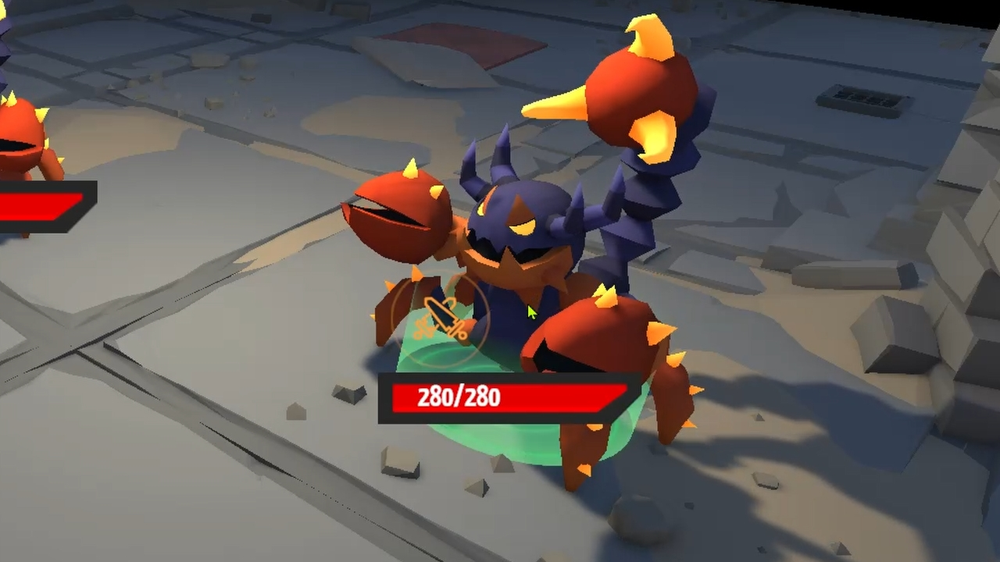
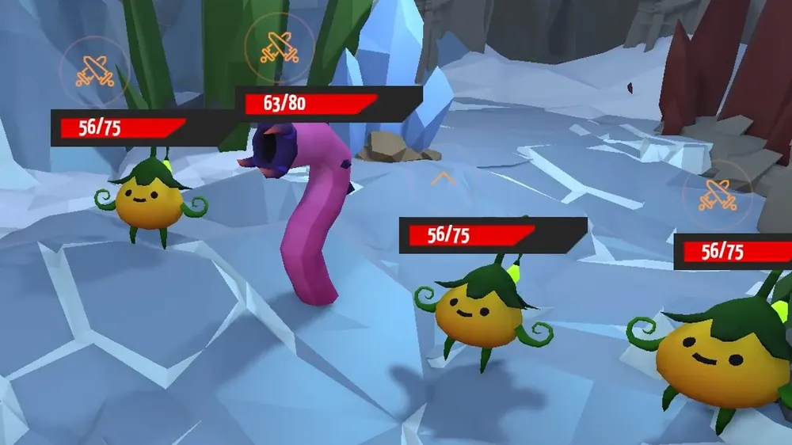

팀 프로젝트 · 팀장
Last Magician
적이 먼저 행동을 예약하고, 플레이어가 대응을 계획한 뒤 실행하는 턴제 전투 RPG. 세 명이 따로 만든 Player / Skill / Enemy를 하나의 전투 루프로 묶었습니다.
- 기간
- 5일 (2026.08.03 ~ 08.07)
- 인원 · 역할
- 3인 팀 · 팀장, 전투 시스템(Turn Manager) / 전투 UI / 시스템 통합
- 팀 구성
- 김현준: Battle System, Battle UI · 조정훈: Player, Skill · 하재헌: Enemy
- 기술
- Unity 6 · C# · Git
- 링크
- 전투 진행 시연GitHub
1. 이 프로젝트로 보여 드리는 것
| 강점 | 근거 | 결과 |
|---|---|---|
| 흐름을 명시적인 상태로 설계한다 | 전투 단계마다 가능한 행동이 달라, 턴 상태를 13개 enum의 상태 머신으로 정의 | 어느 단계에서 무엇이 가능한지 코드에서 바로 보임 |
| 게임 규칙과 자료구조를 일치시킨다 | "등록 순서 = 실행 순서"라는 규칙에 맞춰 Skill / Enemy 행동을 FIFO Queue로 관리 | 예약한 순서대로 실행되는 것이 구조로 보장됨 |
| 나눠 만든 기능을 하나로 통합한다 | 팀장으로 시스템 경계를 나누고, TurnManager에서 호출 순서·데이터 전달·UI를 연결 | 5일 안에 전투 루프 완성 |
| 규모에 맞는 복잡도를 고른다 | 일부러 TurnManager 중심 구조를 선택하고, 확장 시 분리 계획을 문서로 남김 | 단기 완성과 확장 경로를 모두 확보 |
2. 구조
적이 먼저 행동을 예약한다 → 플레이어가 대응을 계획한다 → 예약한 행동을 실행한다
- Enemy PlanningEnemy Queue 등록
- Player PlanningSkill Queue 등록
- Skill Queue 실행등록 순서대로
- Enemy Queue 실행등록 순서대로
- 결과 확인계속 / 종료
Player · Skill · Enemy 시스템은 TurnManager에서 만나고, 전투 상태와 결과는 Battle UI로 전달됩니다.
3. 핵심 구현
① 턴 상태 머신
- 문제
- 전투 단계마다 허용되는 입력과 행동이 다릅니다 (계획 중에는 스킬 선택, 실행 중에는 입력 차단).
- 판단
- 단계를 enum 상태로 정의하고,
GoToStep()한 곳에서만 전환합니다. - 결과
- 게임오버 상태이거나 같은 상태로의 전환은 무시해서 중복 실행을 막았습니다.
코드 — TurnState와 전환
public enum TurnState
{
Initialize, StartBattle,
StartNewRound, EnemyPlanning,
PlayerTurnStart, PlayerPlanning, ExecuteSkills, PlayerTurnEnd,
EnemyTurn, EnemyTurnEnd,
EndRound, EndBattle, GameOver,
}
private void GoToStep(TurnState state)
{
if (isGameOver || state == _currentState) return;
_currentState = state;
RunTurnBehavior();
}② Skill Queue / Enemy Queue
- 스킬은 등록 순서가 곧 실행 순서이므로 FIFO
Queue를 선택했습니다: 선택 → 코스트 확인 →TurnData생성 → Enqueue → 턴 종료 → Dequeue → 실행 - 남은 코스트가 있으면 계속 계획하고, 없으면 턴 종료 버튼을 활성화합니다.
- 등록해 둔 대상이 이미 죽었으면 남아 있는 다음 대상을 자동으로 지정합니다.
- 적은 플레이어보다 먼저 행동을 Enemy Queue에 등록하고, 체력바 위 아이콘으로 공개합니다. 플레이어는 그걸 보고 전략적으로 대응합니다.
코드 — Skill Queue 등록과 실행
// 스킬 선택 후 대상을 클릭하면 TurnData 로 만들어 Queue 에 등록
private void OnEnemyClicked(EnemyBase enemy)
{
UnSubscribeEnemyClicked();
RegisterSkill(MakeSingleTargetTurnData(enemy));
currentSelectedSkillId = -1;
EnableSelectTarget(false);
// 남은 Cost 가 있으면 계속 Planning
if (CheckRemainCost())
{
PlayerPlanning();
return;
}
uIManager.EnableEndTurnBtn();
}
// Queue 에서 다음 행동을 꺼내 실행
private void PlayNextSkill()
{
PlayerTurnData turnData = playerQueue.Dequeue();
Transform[] targets = new Transform[turnData.target.Length];
CheckTargets(turnData, targets); // Single / Area, 죽은 대상 교체
playerCombat.SetNowSkillAndTarget(turnData.skill, targets);
StartCoroutine(PlayBeforeAttackRoutine());
}

③ 전투 UI 연동
| UI | 구현 내용 |
|---|---|
| HP Bar | HP 변화 반영과 감소 애니메이션 |
| Skill Button | 스킬 선택, 계획 단계에 따른 표시 제어 |
| Turn End Button | 남은 코스트와 계획 상태에 따른 활성화 |
| Damage Feedback | 피격 시 카메라·HP Bar 흔들림, 대미지 수치 표시 |
| Target Indicator | 대상 선택 시 원기둥 형태로 시각화 |
④ 팀장으로서의 통합
- 담당 영역과 연결 지점(누가 무엇을 호출하고 어떤 데이터를 넘기는가)을 먼저 정한 뒤 병렬로 개발했습니다.
- Player / Skill / Enemy / UI를 TurnManager에서 연결하고, Git 통합과 충돌 조정, 빌드 검증, 일정 관리를 맡았습니다.
4. 트러블슈팅
빌드에서만 초기 UI가 표시되지 않음
- 현상
- 에디터에서는 정상인데, 빌드에서는 첫 씬 진입 시 UI가 표시되지 않고 진행이 멈췄습니다.
- 원인
- 초기화 과정과 UI 출력 시점이 겹쳤습니다.
- 해결
- 첫 화면을 검은 화면으로 유지 → 초기화 완료 → Fade In 순서로 고정했습니다.
- 교훈
- 에디터와 빌드는 초기화 순서가 다를 수 있으므로, "화면을 보여 주는 시점"을 초기화 완료 뒤로 명시해야 합니다.
5. 한계와 회고
복잡한 구조를 만드는 것보다, 프로젝트의 규모와 제약에 맞는 적정 복잡도를 고르는 것이 중요하다는 걸 배웠습니다.
- TurnManager에 책임 집중: 3명 · 5일 조건에서는 통합 속도에 유리했지만, 기능이 늘면 Player Turn, Enemy Turn, Skill 실행이 한 곳에 몰립니다.
- 확장 계획
- 턴 책임 분리:
PlayerTurnController/EnemyTurnController/SkillExecutionController - 행동 추상화: 스킬 외에 공격·방어·아이템·버프도 같은 행동으로 다루기
- 데이터 주도:
TurnData에 실행 데이터를 정의하고 실행 로직과 분리해, 새 행동을 추가할 때 기존 코드 수정을 최소화
- 턴 책임 분리: